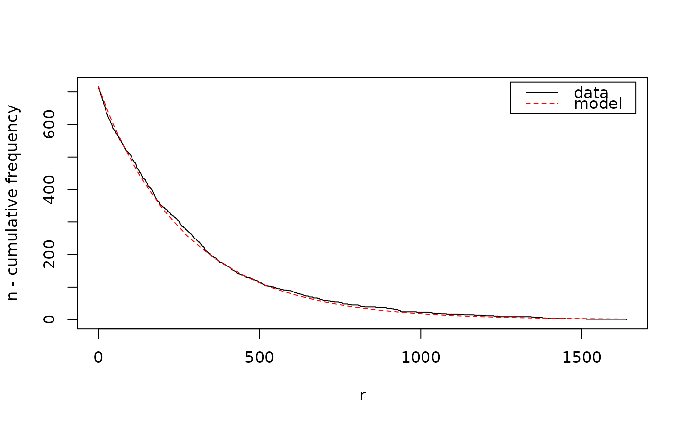

Calls the Java implementation of the depth-first search algorithm described in the paper cited below to mine NB-frequent itemsets or NB-precise rules.
Arguments
- data
object of class arules::transactions.
- parameter
a list of parameters (automatically converted into an object of class
NBMinerParameter). Reasonable parameters can be obtained usingNBMinerParameters()(see details section).- control
a list of control options (automatically converted into an object of class
NBMinerControl). Currently onlyverboseand"debug"(both logical) are available.
Value
An object of class arules::itemsets or arules::rules, depending
on the rules parameter. Estimated precision is stored in the quality slot.
References
Michael Hahsler. A model-based frequency constraint for mining associations from transaction data. Data Mining and Knowledge Discovery, 13(2):137-166, September 2006. doi:10.1007/s10618-005-0026-2
Examples
data("Agrawal")
## mine
param <- NBMinerParameters(Agrawal.db, pi = 0.99, theta = 0.5, maxlen = 5,
minlen=1, trim = 0, verbose = TRUE, plot = TRUE)
#> using Expectation Maximization for missing zero class
#> iteration = 1 , zero class = 3 , k = 0.9862909 , m = 277.9777
#> iteration = 2 , zero class = 3 , k = 0.9862909 , m = 277.9777
#> total items = 719

itemsets_NB <- NBMiner(Agrawal.db, parameter = param,
control = list(verbose = TRUE, debug = FALSE))
#>
#> parameter specification:
#> pi theta n k a minlen maxlen rules
#> 0.99 0.5 719 0.9862909 0.001371754 1 5 FALSE
#>
#> algorithmic control:
#> verbose debug
#> TRUE FALSE
#>
inspect(head(itemsets_NB))
#> items precision
#> [1] {item217, item539} 1.0000000
#> [2] {item222, item365, item478, item716} 1.0000000
#> [3] {item220, item452} 1.0000000
#> [4] {item225, item299} 0.9999951
#> [5] {item253, item438, item660, item849} 1.0000000
#> [6] {item214, item648} 0.9993312
## remove patterns of length 1 (noise)
i_NB <- itemsets_NB[size(itemsets_NB) > 1]
patterns <- Agrawal.pat[size(Agrawal.pat) > 1]
## how many found itemsets are subsets of the patterns used in the db?
table(rowSums(is.subset(i_NB,patterns)) > 0)
#>
#> TRUE
#> 2603
## compare with the same number of the most frequent itemsets
itemsets_supp <- eclat(Agrawal.db, parameter = list(supp = 0.001))
#> Eclat
#>
#> parameter specification:
#> tidLists support minlen maxlen target ext
#> FALSE 0.001 1 10 frequent itemsets TRUE
#>
#> algorithmic control:
#> sparse sort verbose
#> 7 -2 TRUE
#>
#> Absolute minimum support count: 20
#>
#> create itemset ...
#> set transactions ...[716 item(s), 20000 transaction(s)] done [0.05s].
#> sorting and recoding items ... [656 item(s)] done [0.01s].
#> creating sparse bit matrix ... [656 row(s), 20000 column(s)] done [0.00s].
#> writing ... [10873 set(s)] done [0.49s].
#> Creating S4 object ... done [0.00s].
i_supp <- itemsets_supp[size(itemsets_supp) > 1]
i_supp <- head(sort(i_supp, by = "support"), length(i_NB))
table(rowSums(is.subset(i_supp, patterns)) > 0)
#>
#> FALSE TRUE
#> 691 1912
## mine NB-precise rules
param <- NBMinerParameters(Agrawal.db, pi = 0.99, theta = 0.5, maxlen = 5,
rules = TRUE, minlen = 1, trim = 0)
rules_NB <- NBMiner(Agrawal.db, parameter = param,
control = list(verbose = TRUE, debug = FALSE))
#>
#> parameter specification:
#> pi theta n k a minlen maxlen rules
#> 0.99 0.5 719 0.9862909 0.001371754 1 5 TRUE
#>
#> algorithmic control:
#> verbose debug
#> TRUE FALSE
#>
inspect(head(rules_NB))
#> lhs rhs precision
#> [1] {item648} => {item548} 0.9982046
#> [2] {item1, item85} => {item520} 1.0000000
#> [3] {item508} => {item559} 1.0000000
#> [4] {item636, item648} => {item853} 1.0000000
#> [5] {item76, item669, item722, item879} => {item808} 1.0000000
#> [6] {item99, item823} => {item860} 1.0000000